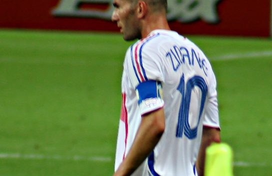

개인기 락커룸 › 턴
마르세유 턴
Marseille Turn (Roulette)

사진: David Ruddell (SuperManu 수정) · CC BY 2.0 · 잘라서 사용 · 원본과 라이선스

공을 발바닥으로 두 번 끌며 몸을 360도 돌려 수비수를 등지고 빠져나가는 지단의 기술.
따라하는 순서
- 수비수가 정면에서 다가올 때 오른발 바닥으로 공을 멈춘다
- 공을 뒤로 끌면서 몸을 왼쪽으로 돌리기 시작한다
- 돌아가는 동안 왼발을 공 위에 올려 같은 방향으로 한 번 더 끈다
- 한 바퀴를 마치면 수비수 옆 공간으로 가속한다
실전 팁
회전 중에 등으로 수비수를 막아 주면 공을 뺏기지 않아요.
실제 사용 사례
- 1980년대디에고 마라도나 — 압박 속에서 몸을 돌려 공을 지키는 기술로 즐겨 사용
- 유벤투스·레알 마드리드·프랑스 대표팀지네딘 지단 — 중원에서 두 명 사이를 빠져나갈 때 쓰며 ‘지단 턴’으로도 불림 장면 영상
따라하기 영상
능력치
| 속임수 | 3 / 5 |
|---|---|
| 스피드 | 2 / 5 |
| 화려함 | 5 / 5 |
| 실전성 | 3 / 5 |